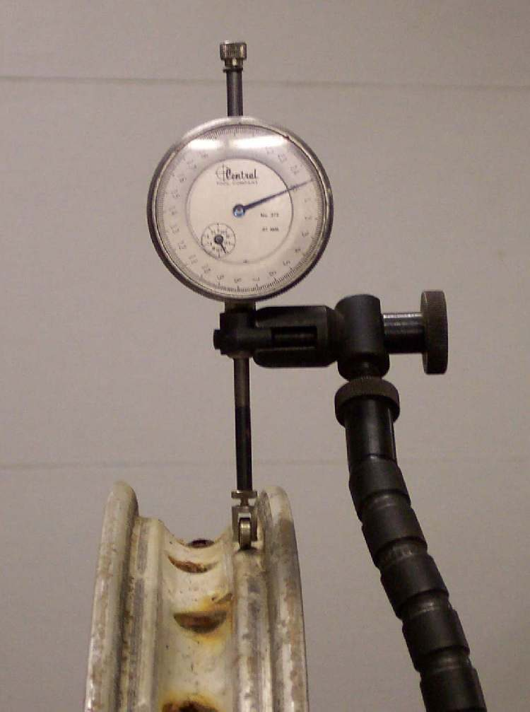
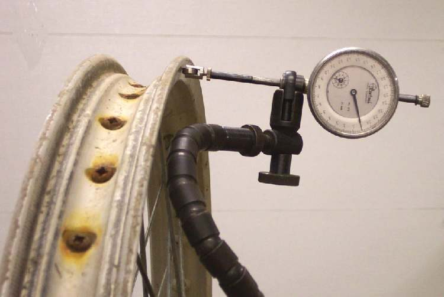

Photo: Dan's Motorcycle Repair Course (dansmc.com), used with permission.
Home mechanic (basic tools) · Time: 20 to 30 min (estimate) (estimate)
Runout is how much a turning wheel moves away from a perfect circle. Lateral runout is side-to-side wobble. Radial runout is up-and-down movement (out of round). A wheel with too much runout causes vibration, weaving and uneven braking.
Safety
- Lift the wheel with the bike stable. Keep fingers clear of spokes, disc and chain while spinning.
- Never try to straighten a cast alloy wheel by heating or hammering. It can crack and fail later.
You need
- A dial indicator on a magnetic base gives a real number. Without one, fix a pointer (stiff wire or a cable tie) to the fork leg or swingarm so its tip almost touches the rim.
- A feeler gauge or a ruler to measure the gap at the pointer.
Steps
- Check the wheel bearings first (Check wheel bearings). A worn bearing makes a good rim look bent.
- Lift the wheel. On the rear, slacken the chain or take it off the sprocket so it does not pull the wheel.
- Measure on the rim, not on the tyre. Tyre sidewalls have lettering and moulding lines that are not true.
- Lateral: set the indicator tip or pointer against the flat side of the rim. Turn the wheel slowly one full turn. Note the highest and lowest reading. The difference is the lateral runout.
- Radial: set the tip on the bead seat area or the edge of the rim face. Turn slowly and note the difference. Ignore the small step at the rim weld on spoked rims.
- Mark the high spots with chalk or tape.
- Compare with your manual. K-Light 125: rim runout limit 2.0 mm lateral and 2.0 mm radial.
- If the axle may be bent (after a crash), a workshop measures it on V-blocks. K-Light 125 axle bend limit: 0.2 mm.
What the result means
- Within the limit and vibration still felt: Balance a wheel, check tyre wear.
- Spoked wheel slightly over the limit, no dents: Check and tighten spokes to true it.
- Dented, cracked or badly bent rim, or any cast wheel over the limit: replace the wheel or rim (Rim is dented or cracked).
Check your work
- You have both a lateral and a radial number for the rim, measured with good bearings.
If it did not fix the problem
- Wheel is true but the bike still wobbles: Handlebars shake or wobble.
- Brake pulses: check the disc as well (Check a brake disc).
Reference values (K-Light 125)
| Item | Value | Source |
|---|---|---|
| Rim runout limit, lateral and radial | 2.0 mm | K-Light 125 manual, PDF pp. 135, 161 |
| Axle bend limit, front and rear | 0.2 mm | K-Light 125 manual, PDF pp. 135, 164 |